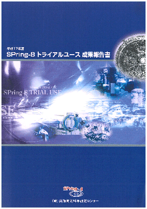

1. トライアルユースの概要2. トライアルユース実施の経緯
3. トライアルユースの結果
4. まとめ
5. トライアルユース課題実施報告書
* 送付を希望される方は、連絡先（氏名、所属、〒住所、E-mail）をご記入の上、 事務局 support@spring8.or.jp までE-mailでご連絡ください。
大型放射光施設SPring-8では、2003年度より、（財）高輝度光科学研究センター（JASRI）
が産業利用促進を目的としてトライアルユース（TU）を実施して来たが、今年度（2005年度）
で終了する。
概要は、「産業界等が抱える研究開発分野、応用開発分野等の問題のうち、 SPring-8の高
輝度放射光を利用することにより技術的ブレイクスルーが期待されるものを対象に、産学官の
放射光利用トライアルユースを実施することにより、地域産業活性化のためのイノベーション、
新産業の創出を支援する。」である。実施に際し、年度毎に重点領域を設定した。これにより、
必要な技術や装置を予め整えることが出来、より有効に実施できた。
概要は、「産業界等が抱える研究開発分野、応用開発分野等の問題のうち、 SPring-8の高
輝度放射光を利用することにより技術的ブレイクスルーが期待されるものを対象に、産学官の
放射光利用トライアルユースを実施することにより、地域産業活性化のためのイノベーション、
新産業の創出を支援する。」である。実施に際し、年度毎に重点領域を設定した。これにより、
必要な技術や装置を予め整えることが出来、より有効に実施できた。
支援内容は、重点分野の実験環境整備、コーディネータ及びスタッフによる実験企画・準備、
実験実施、実験解析に至る技術支援、及び個々の実験に必要な経費などの財政支援からなる。
課題の募集・審査については、一般の課題と同時に募集し、TU課題選定委員会で施策の趣旨に
沿って審査された。
この報告書は実験実施後に通常提出されるExperimental Reportとは別途に提出された、TU課
題実施報告書をまとめたものである。
最後に、2006年3月13日（月）に報告会が開催され、TU評価委員会による施策全体の評価
（個々の課題ではなく）が実施される予定である。
＜重点領域の指定＞
「重点領域推進委員会」にて、産業応用を政策的に推進すべき分野として、
「重点産業利用」が領域指定された。トライアルユース（TU）課題は、
領域指定型の重点研究課題（公募）として扱われる。
＜課題選定＞
「利用研究課題選定委員会」から選定を委嘱されたJASRIの「TU課題選定委員会」
において、25課題がTU課題に選定された。審査における考え方は次の通り。
- 一般課題の審査基準の科学技術的妥当性の下記項目のうち（ハ）と(ニ)を重視
（一般課題審査の「産業利用分科会」の基準と同じ）。
科学技術的妥当性として、以下（イ）から（ニ）のうち、いずれかに該当すること
（イ）研究課題の先端性及び当該研究課題を含む科学技術分野の発展性ないしは新分野開拓への寄与
（ロ）期待される研究成果の基礎的研究分野及び基盤的技術開発分野への貢献度
（ハ）期待される研究成果の産業基盤技術としての重要性及び発展性
（ニ）研究課題の社会的意義及び社会経済への寄与度
- TU課題における戦略的重点分野との関連を重視。
- 新規利用者、新規研究テーマ（分野）、新規産官学連携の課題を重視。
＜技術支援＞
コーディネータ、産業応用・利用支援グループが中心に、課題毎に担当者をおき、
BL担当者の協力のもと全所的に支援した。技術相談から実験企画、資材の調達・実験準備、
実験解析など必要に応じてきめ細かに対応した。
＜利用実験＞
実施期間の区切りは、通常の年度とは少し異なる。
2005A利用期が2005年4月～8月の期間、2005B利用期が
2005年9月～12月の期間である。（2005A利用期は蓄積リング棟台風被害による
屋根修理作業のため、例年より短い期間となった。）
＜報告＞
2006年3月13日（月）に、2005年度のTU成果報告会およびTU評価委員会を開催し、
その結果についてはSPring-8ホームページに掲載予定である。なお、今回が
最終年度であることから、3年間の施策全体も評価される予定である。
トライアルユース（TU）に参加した2005A利用期と2005B利用期の実施課題 と参加機関と参加人員を表1と表2に示す。これらの実績を整理しつつ、 特徴を次にまとめる。
＜提案及び実施結果＞
| 実験責任者所属別 | 分野別 | ||||
| 申請 | 実施 | 申請 | 実施 | ||
| 産 | 24 | 14 | 微量分析 | 30 | 21 |
| 学官（産） | 14 | 8 | ＸＰＳ | 2 | 1 |
| 学官 | 3 | 3 | 一般 | 9 | 3 |
| 合計 | 41 | 25 | 合計 | 41 | 25 |
| 学官（産）：大学または公的機関の申請に民間が共同で参加 学官：大学または公的機関のみの申請 微量分析：薄膜・微量元素の構造解析・状態分析 ＸＰＳ：硬Ⅹ線による光電子分光応用 |
|||||
＜参加機関及び人員＞
- 参加規模
・ 申請：69名/22社、48名/14機関（内 9名/JASRI）
・ 利用実験参加：57名/19社、53名/12機関（内 3名/JASRI） - 新規参加企業
・ 新規参加企業：8社
・ 新規分野：1
＜実施ビームライン、シフト数＞
| BL19B2 | 19課題 | 102シフト | （産業利用ビームライン） |
| BL13XU | 3課題 | 9シフト | |
| BL46XU | 2課題 | 12シフト | |
| BL47XU | 1課題 | 3シフト | |
| 合計：126シフト/4ビームライン | |||
＜特徴＞
- 課題および参加企業の分野
昨年度に比べて、分野の傾向はほぼ同じである。これらは、 重点領域の設定から予想された通りであり、施策を反映している と考えている。ただし、化学系の企業からの課題で、具体的なエ レクトロニクス製品に直結した材料課題は、エレクトロニクス分野 として数えた。エレクトロニクス 13課題 素材 6課題 環境・エネルギー 4課題 薬品・食品 1課題 その他 1課題 - 新規参加企業
新規参加企業が非常に少なかった。一方、二度目の申請で結果が 期待されるとして採択された課題では、期待通り成果が得られている。 - 重点分野設定との関係
重点分野として、硬X線による光電子分光応用、薄膜・微量元素の構造解析 ・状態分析を設定した。薄膜・微量元素の構造解析・状態分析の分野へは、 電子デバイス用薄膜の構造解析、蛍光体などの微量元素の局所構造解析な ど予想通りの応募であった。しかし、硬X線による光電子分光応用の分野では、 ほとんど応募が無かった。
＜前回との比較＞
2001年度の補正予算でのトライアルユースでは、新規ユーザおよび分野の拡大があり、
さらに産業利用ビームラインの稼動時期とも重なり、 2002年は民間の実験責任者の実施課題がほぼ倍増した。
こうした流れの後の実施である。
- 今年度の特殊事情
民間利用の更なる拡大を目指した施策として、「先端大型研究施設戦略活用プログラム」 が2005年度下期からTUを大幅に上回る規模で新たに実施された。その影響で、 2005年度下期はTUへの応募企業が極端に減少した。しかしながら、新規プログラムでは、 その規模の拡大が急激であったにもかかわらず、新規企業の増加、新規分野の拡大がさ らに顕著であったことは、TUの施策とその利用成果が広範な企業に知られ、SPring-8の 利用が身近になっていたことの現われと考えている。 - 参加規模
上期は36件の応募に21件の課題を採択（採択率：58％）したが、上述した 影響で2005年度下期には激減した。 - 実施参加機関
25課題中、大学および公的機関の責任者による課題が11課題と比較的多く 採択された。企業と共同で実用化を念頭に置いた内容がほとんどである。 - 特徴
設定された重点領域に合わせてエレクトロニクス関連分野の課題が前回 に引き続き顕著であった。特に、フラットパネルディスプレーに関係して、 蛍光体および液晶用有機膜関連材料が当該施策により、活性化するとともに、 具体的な成果も得られつつある。また、手法としては、XAFSによる局所構造 解析が広範な分野に利用されるようになり、材料解析の有効性が産業界に広 く浸透してきたと思われる。
最後に、三年間の施策を総括する。
エレクトロニクスは、Si-LSIやストレージデバイス関連を中心
にこれまで最も活発に利用されてきた産業分野である。今回の施策に
より、蛍光体材料や液晶用有機薄膜などディスプレー関連の開発課題
が急増し、成果も挙げられつつあり、新たに大きな勢力として育って
きた。蛍光体では大学、企業両方が参加している。一方、液晶関連で
は、高い技術力を持つ有力な材料メーカーが参加してきた。大手の総
合電気メーカー主導で開発が進むLSIと、大きく異なる特徴であり、
SPring-8が最先端の分析ツールを提供する場と考えると、非常に重要
な傾向である。
金属・高分子素材では、分野・業界にまとまった傾向はないものの、 着実に企業が増加し、分野が広がっている。なお、素材分野では特記 すべき点がある。一社はTUの結果が直接事業貢献につながり、二社は TU後発展させ、優れた成果を挙げ、受賞するに至っている。
環境・エネルギーでは、燃料電池関係の課題が急増し、やはり大き な勢力となってきた。燃料電池は携帯用から電力用まで用途が広いこと と、新規の事業分野であることから、エレクトロニクス、自動車、ガス、 素材など、多くの業界にまたがる特徴を持つ。さらに、水素吸蔵合金の 開発関連では大学、企業両方が参加している。環境分野では、有害物質 の検出および触媒を中心とした除去技術関連の課題が着実に増加している。
製薬・日用品では、量的にはあまり利用が進まなかった。製薬企業は、 すでに22社が専用ビームラインで活動しており、新規参入が少ない状況と 思われる。しかしながら、シャンプー、髭剃り、健康水など非常に身近な 製品分野の開発のための利用が試みられ、放射光利用が産業界に広がりつ つある典型的な側面である。
一方、文化貢献でも大きな成果が得られた。卑弥呼の鏡として知られる 三角縁神獣鏡の分析が実施され、考古学的に重要な成果が得られ、学会のみ ならず、新聞など報道機関でも取り上げられ、大きな反響があった。
さらに、実施状況では、延べ75社から259名、大学等53機関から234名が 直接実験を実施し、企業も新たに48社が利用を開始した。これらの結果は、 施策趣旨に沿って充分な成果が得られていることを示すとともに、当該施策 が産業利用の潜在ニーズを顕在化するに非常に有効であったと考えている。
最後に、施策実現にご尽力頂いた国の諸関係機関およびJASRIビームラ イン担当者など、実施に関わって頂いた現場の方々に、TU施策の実施責任者 として、あらためて感謝いたします。
2005A･B 利用期 トライアルユース実施課題 （表１）
2005A・B利用期 参加機関と参加人数 （表２）